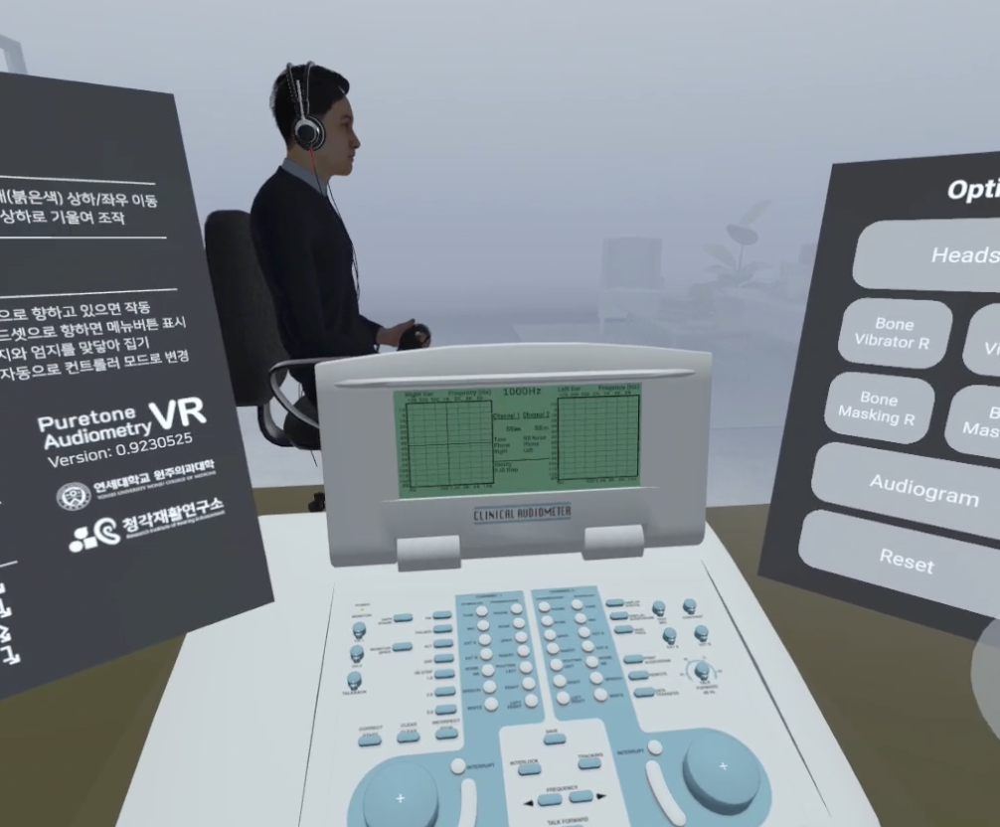
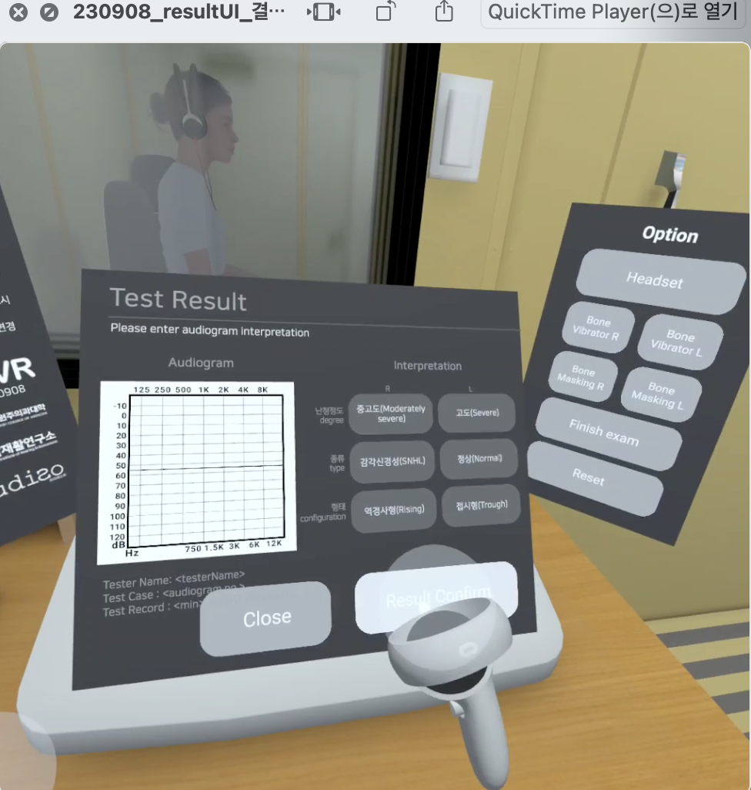
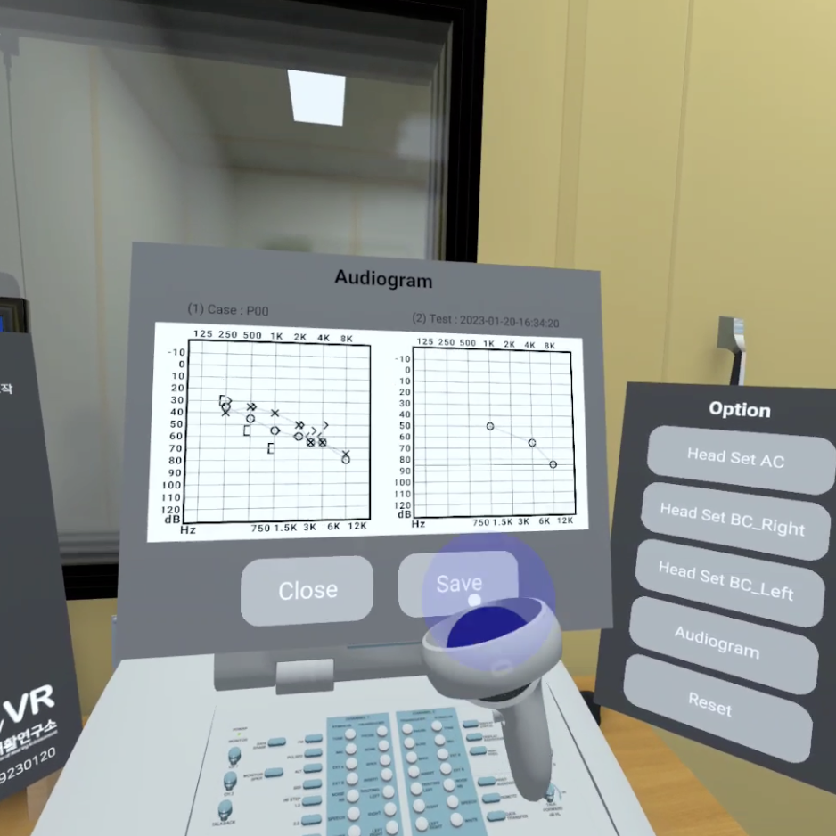
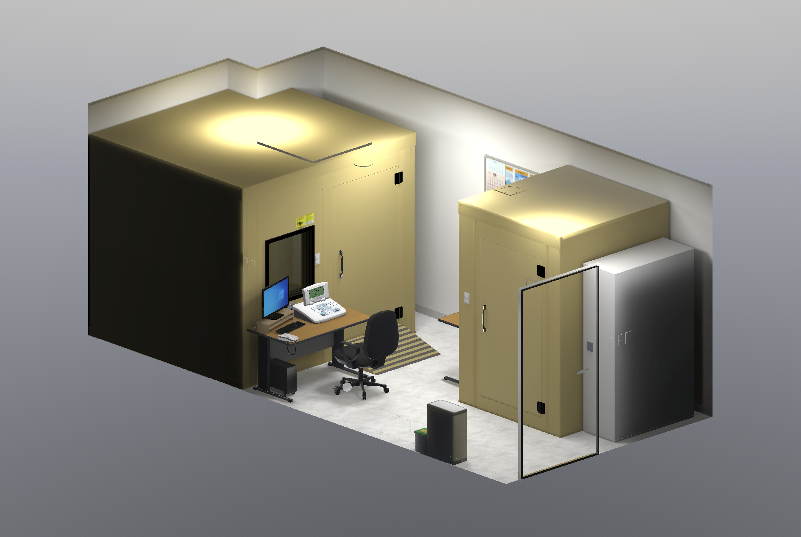

순음청력검사(PTA) 교육을 위한 VR 훈련 시스템. 실제 난청환자 디지털트윈과 다양한 임상 시나리오를 가상 환경에서 반복 경험합니다.

표준 청력검사는 숙련된 청각사와 고가 장비가 필수입니다. 청각사 양성 과정에서 표준화된 훈련 환경에 접근하기 어려웠던 현실을 VR 기술로 해결합니다.
물리기반 렌더링(PBR) 기술로 실제 청력검사실 환경을 충실하게 재현합니다. 시간과 장소의 제약 없이 몰입형 훈련이 가능합니다.

실제 난청환자 데이터베이스로 생성한 디지털트윈 아바타와 함께 훈련합니다. 희귀 환자 케이스 시나리오와 다양한 임상 변수를 자유롭게 설정할 수 있습니다.

자동 채점과 성과 데이터로 훈련생의 역량을 객관적으로 측정합니다. 교육자 없이도 표준화된 평가가 가능합니다.
단계별 가이드를 따라 절차를 반복 숙달합니다. 실수에 대한 즉각적인 피드백으로 교육자의 부담을 줄입니다.
교육자와 훈련생이 동일한 VR 공간에서 협업합니다. 실시간 지도와 피드백으로 학습 효과를 극대화합니다.
무선 독립형 HMD로 검사실 없이도 어디서든 훈련 가능합니다.
반복 훈련과 즉각 피드백으로 전통적인 도제식 교육 대비 학습 속도를 높입니다.
희귀 케이스와 다양한 장비 유형을 콘텐츠로 제공해 현장 경험의 편차를 해소합니다.
실제 환자 없이도 고위험 상황을 안전하게 경험하고 대응 능력을 기릅니다.
훈련 기록과 성과 지표를 축적해 교육 프로그램의 품질을 지속적으로 개선합니다.
네트워크 기반 원격 검사 기능으로 교육 기관의 규모에 따라 유연하게 운영합니다.
순음청력검사의 전 과정을 VR 환경에서 실감나게 체험합니다. 실제 검사기기의 조작감과 환자 반응을 충실하게 재현합니다.
